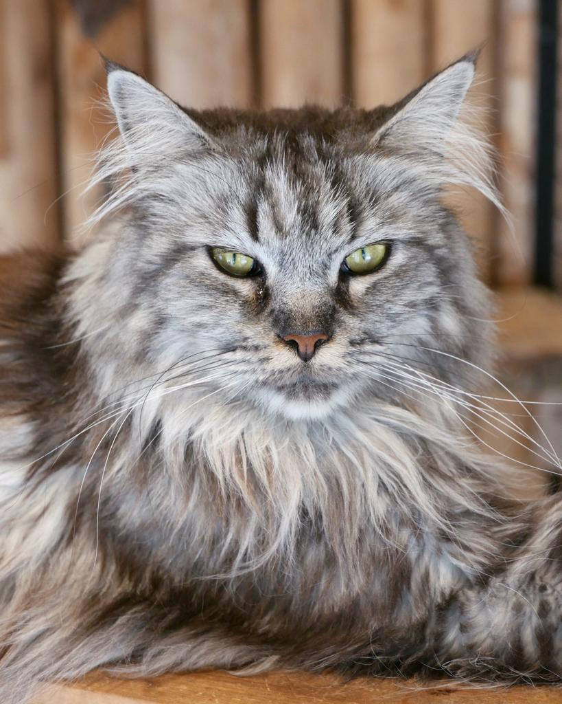
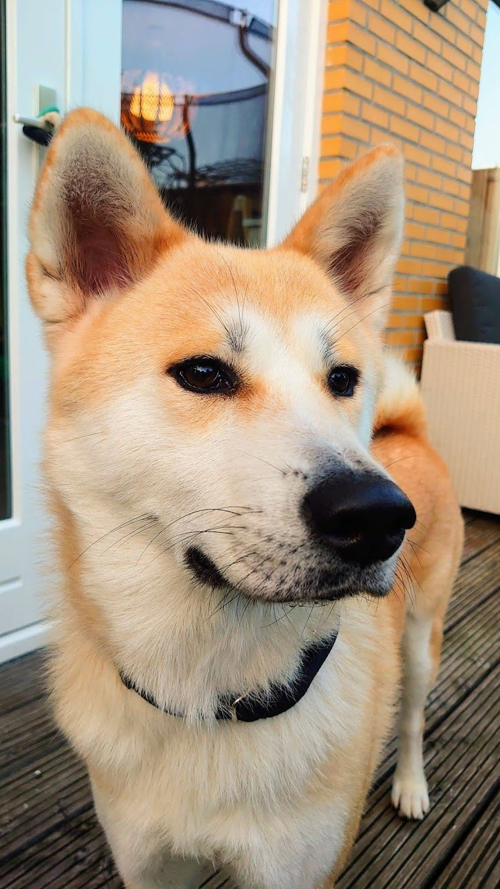

Over ons
Welkom bij Tijdsporen, de podcast die je meeneemt op een reis door de geschiedenis van de wereld! Of je nu een geschiedenisfanaat bent of gewoon nieuwsgierig naar het verleden, wij brengen het verleden tot leven met interessante verhalen.
Wie we zijn


Jessy en Nova, de makers van de podcast, hebben altijd een passie gehad voor geschiedenis. We combineren verhalen vertellen met onze vakkennis in geschiedenis om elke aflevering zowel informatief als vermakelijk te maken.